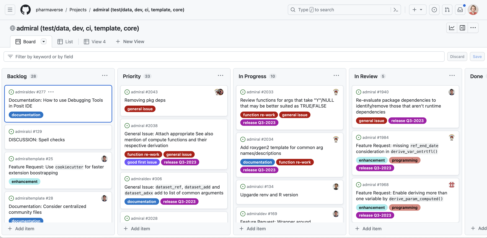

# check out the latest admiral release from CRAN:
install.packages("admiral")
library(admiral)This post is based on a talk given at the regional useR! conference on July 21st 2023 in Basel. I took the opportunity to present my personal perspective on the current cross-industry package development efforts with a particular focus on the transformation of the job description of statistical programmers. As I have only recently started my position at Roche, my personal perspective is the perspective of a newcomer. I have a background in Psychology and Statistics and joined Roche in November 2022 as an intern switching to a permanent position as a statistical programmer – what they call analytical data scientist now – in April 2023. I spend about 20% of my time in such a cross-industry package development project, which was a major reason for applying for this position. In this post I would like to explain how we work in this project, and why this had such an impact on my decision to join Roche.
Context
My decision was influenced by two current industry trends:
First, the switch to a more language agnostic and open source approach for clinical reporting and data analysis. At the moment, R seems to be the best fitting tool for the job, but the systems used here are language agnostic in general. This is related, but does not necessarily lead to the second trend: The move toward cross-industry collaboration when developing clinical reporting software.
As the industry moves toward new (to them) programming languages, fit-for-purpose tools need(ed) to be developed. The realization that siloed solutions – in an area where competitiveness does not benefit patients – are simply resource hungry ways to solve the same problem in parallel provided a great argument for a shift toward collaborations.
Such cross-industry collaborations gave rise to the pharmaverse, a curated collection of R packages designed to solve clinical reporting in R. {admiral}, the project that I work on, is part of the pharmaverse and covers the creation of ADaM data sets (CDISC standard data). These data sets are subsequently used to produce tables, listings, and graphs and are usually part of the submission package for regulators.
Insights
When creating an open source package in an industry where currently there is a lot of traction you have to move fast. No, I don’t mean: Move fast and break things. I mean: Communicate! Get people on board! We aimed {admiral} to be the package for ADaM creation even before deciding to create the package together with GSK. By being transparent about our endeavor, e.g. Thomas Neitmann (then at Roche) posting on LinkedIn, we managed to connect with Michael Rimler from GSK and soon realized that we were dealing with the exact same challenge at both companies, and that a collaborative effort would improve the final product while reducing individual efforts. A working prototype of {admiral} was to be created by GSK and Roche within six months, and would then be open sourced. In our effort to communicate openly, we informed statistical programmers from over 20 companies about the {admiral} project and invited them to try it out and provide feedback once released. In the end, we received over 500 comments from over 50 programmers.
This was instrumental in creating a product that was optimised for general usage in the clinical reporting field and ensured that other companies would not unknowingly invest into their own solution to this challenge. Open sourcing early is particularly beneficial because this ensures from the get-go that code created is aimed at a general audience, and not company specific (perhaps by accident).
{admiral} was created with the long term goal of having a stable and flexible solution for the clinical reporting pipeline. In that spirit, its permissive apache 2.0 licence (jointly owned by Roche and GSK) further strengthens trust into the project, namely for three reasons:
Jointly owned means that efforts to monetize the code-base by one company could be vetoed by the other. The permissive licence ensures that in such an unlikely case, the code-base that has been published would stay available and could always be used and improved upon by others.
Having this package backed by Roche and GSK ensures (as far as this is ever possible) funding for properly maintaining the packages. This is crucial, as a package is rarely finished.
Up to now, experts from many more companies have joined {admiral} or one of its therapeutic area specific package-extensions, inspiring even more trust into its reliability.
If you would like to learn more about licenses for open source projects in the clinical reporting world please check out the recent PHUSE E2E Guidance on open source license
Development workflow
Every improvement, task, or feature we want to implement on {admiral} starts as an issue on our GitHub repository. It is the centerpiece of our development workflow, along with our developer guides which describe in detail the strategies, conventions, and workflows used in development. The guides help us keep the {admiral} package internally consistent (e.g. naming conventions, function logic) but also ensure that {admiral} adjacent packages follow the same conventions and share the user interface. This is further helped by the implemented CICD pipeline which ensures styling convention and spelling (and much more).
The core package developers team meets once a week (twice a week before a release) to discuss progress and priorities. Here, the role of product lead (currently Edoardo Mancini at Roche) and technical lead (currently Ben Straub at GSK) is to set priorities and track the release schedule. These stand-up meetings are centered around the project-board which gives a complete overview of activities and progress. Issues are mostly self-assigned so developers can really chose what they want to work on.

By design, {admiral} is community built. Most developers working on the project are statistical programmers working on clinical reporting themselves. As an open source project, community input is highly valued, and anyone using {admiral} is encouraged to submit issues or take on issues as part of the development team. We also do occasional events to bring the statistical programmers community and the developers closer together. Just last February we organised the {admiral} hackathon which had up to 500 participants.
Impact
For Roche, cross-industry package development work out in their favor: They get access to software created by specialists and users from across the industry but paying only a fraction of the developmental costs. Of course, they don’t have total developmental control but they do get a seat at the table. Any gaps between the open source {admiral} package and the proprietary Roche workflow were bridged by the internal {admiralroche} package.
The switch towards a more language agnostic platform, and open source languages specifically, opens the door to a broad population of university graduates with diverse backgrounds. I personally would not have considered this position five years ago due to a misalignment of skills and job requirements. Working towards an industry standard open source solution will also ensure that skills learned at one company are more easily transferable to external positions, further making the position much more attractive. Access to such a broad pool of potential candidates is clearly beneficial for recruitment at Roche, but also facilitates diversity in teams which makes for a more interesting and effective work place.
Open source development comes with much more transparency by definition. Recognition of contributions are built in - anyone can see who did what. This recognition escapes the confines of your company as it is visible to anyone looking at the repository. Anyone can not only see at any time what is being worked on, what discussions are happening and which direction is being taken, but can also participate and contribute. Transparency also applies to errors in the code and how the team is dealing with them. In such an environment it is practically impossible to hide or cover up errors and corrections. Instead, they have to be dealt with publicly and in the open. This openness about errors also helps seeing errors as a natural occurrence that needs to be dealt with. Space for errors encourages learning and is really beneficial for growing both skills and integrity.
As you work on a team that spans multiple companies, traditional corporate hierarchies do not apply. Of course, there will always be a sort of hierarchy of experience or skills, but these work in your favor: You will know who to ask for help, and teams are generally very happy for contributors of any skill level. Contributions also need not be in code: Inputs into discussions and domain knowledge contributions are highly valued as well. The flip-side of working in a team without your manager oversight: They may not be directly aware of the work you do. That’s why you have to write blog posts :)
The possibility for statistical programmers to pivot towards developing software or writing blog-posts such as this really transforms and broadens their job description. It is this transformation that is reflected by the choice of Roche to re-brand statistical programmers as analytical data scientists. The fact that cross-industry development is being advocated for really lets programmers expand their network outside of their company.
The {admiral} project serves as a testament to the power of collaborative open-source development and the potential it holds for the future of work in this industry.
Last updated
2024-07-10 12:05:50.51412
Details
Reuse
Citation
BibTeX citation:
@online{thoma2023,
author = {Thoma, Stefan},
title = {Cross-Industry {Open} {Source} {Package} {Development}},
date = {2023-07-25},
url = {https://pharmaverse.github.io/blog/posts/2023-07-20_cross_company_dev/cross_industry_dev.html},
langid = {en}
}
For attribution, please cite this work as:
Thoma, Stefan. 2023. “Cross-Industry Open Source Package
Development.” July 25, 2023. https://pharmaverse.github.io/blog/posts/2023-07-20_cross_company_dev/cross_industry_dev.html.